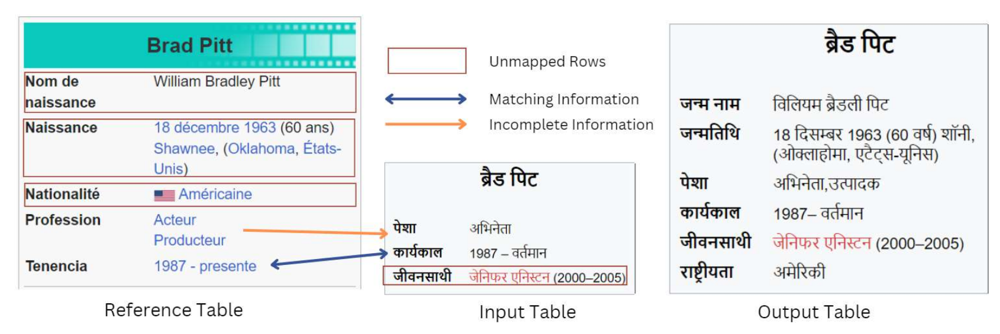

LLM Based Information Synchronization
About
In today’s digital era, non-English content on platforms like Wikipedia is often outdated or incomplete, especially in low-resource languages. Our work tackles this problem through two key contributions:
- Information Updation Dataset: We introduce a new dataset that simulates the process of updating outdated Wikipedia tables by comparing older versions with current, human-curated tables.
- Hierarchical Task Decomposition: Rather than a single-step update, we propose a structured approach that decomposes the synchronization task into multiple sub-tasks. This includes translating tables into a common language, converting them into knowledge graphs for improved reasoning, aligning and merging information from multiple sources, and finally updating the tables. This methodology not only improves performance but also offers interpretability and modularity to address complex edge cases.
Example:
Below is an example of information synchronization from our dataset. On the right is a reference table in a high-resource language, and on the left is an outdated table in a low-resource language. Updates made by our model are highlighted.

Methodology
Our solution leverages large language models (LLMs) through a detailed hierarchical task decomposition strategy. Reviewers specifically asked about the necessity of each decomposition step, so we provide the following justifications:
- Translation: Converting all tables to English ensures consistency, as most state-of-the-art LLMs are optimized for English, reducing noise from translation discrepancies.
- Knowledge Graph Construction: Representing tables as structured graphs enhances the model’s reasoning abilities, as LLMs perform better with graph-structured information compared to raw tabular data.
- Alignment and Merging: The merging step is critical to identify overlapping, missing, or outdated information. It ensures that the most accurate and comprehensive data is preserved in the final output, and it addresses ambiguities that could arise from a direct update.
- Final Update: Once the information is aligned and merged, the updated knowledge graph is converted back to a table. This step is essential to reconcile differences and produce a coherent output that mirrors a human-curated table.
Each of these steps was introduced to tackle specific challenges identified during the review process, and together they form a robust framework for multilingual information synchronization.
Dataset Statistics
Our dataset spans multiple Wikipedia categories and languages. Below is a summary of dataset statistics:
| Data Split | Number of Tables | Number of Pairs |
|---|---|---|
| Train | 1800 | 17000 |
| Dev | 250 | 2250 |
| Test | 250 | 2250 |
| Data Split | Cohen's Kappa | Human Performance | Majority Agreement |
|---|---|---|---|
| Dev | 0.81 | 80.5% | 94.2% |
| Test | 0.79 | 82.1% | 95.0% |
People
The INFOSYNC dataset is prepared at the School of Computing of University of Utah and IIT Guwahati by the following people:
Citation
Please cite our paper as below if you use the INFOSYNC dataset.
Acknowledgement
Authors sincerely thank the reviewers and meta-reviewer of NAACL 2025 for their valuable pointers related to their works, corrections, and helpful comments. Authors thank the largest free resource Wikipedia for InfoSync tables.